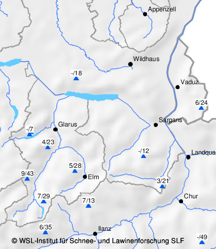

Verhalten abseits der Piste
Lawinenunfälle
Wissenswertes über Lawinen
Literatur
Kernteam Lawinenausbildung
Ausserordentlichen Lawinenlagen
Schneedaten der StationenZeitverlauf der StationsdatenBenutzungshinweiseWeitere ProdukteÖstlicher AlpennordhangSchneedaten der automatischen StationenNeuschneehöhe 1 Tag [cm] / Schneehöhe [cm]Für Zeitverlauf auf Stationssymbol klicken
aktualisiert am 24.10.2017, 16:49 Schneedaten der BeobachterNeuschneehöhe 1 Tag [cm] / Schneehöhe [cm]Für Zeitverlauf auf Stationssymbol klicken
aktualisiert am 24.10.2017, 09:46 
|